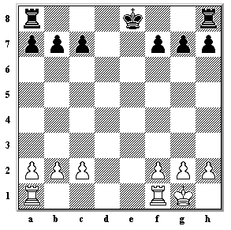
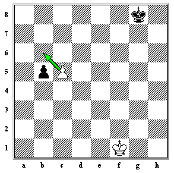

| TECHNIQUE | DESCRIPTION | ILLUSTRATION |
| Castling |
Castling: Castling is a defensive maneuver that involves moving a player's king and either of the player's original rooks simultaneously. It is the only move in chess in which a player moves two pieces in the same move.
In order to castle, one moves the king two squares towards a rook on the player's first rank, and then moves the rook to the square over which the king crossed. Castling may only be done if the following criteria are met:
|
 |
| En Passant Capture | En Passant Capture: A special pawn capture that can only occur immediately after a pawn makes a move of two squares from its starting square, and it could have been captured by an enemy pawn had it advanced only one square. The opponent captures the just-moved pawn "as it passes" through the first square. The result is the same as if the pawn had advanced only one square and the enemy pawn had captured it normally. |  |